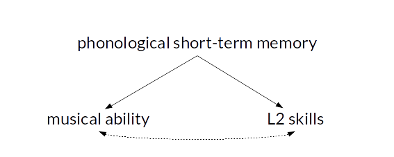
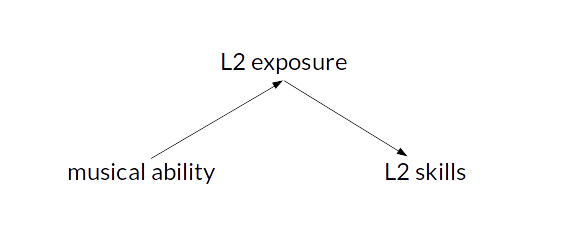

Controlling for confounding variables in correlational research: Four caveats
In correlational studies, it is often claimed that a predictor variable is related to the outcome, even after statistically controlling for a likely confound. This is then usually taken to suggest that the relationship between the predictor and the outcome is truly causal rather than a by-product of some more important effect. This post discusses four caveats that I think should be considered when interpreting such causal claims. These caveats are well-known in the literature on ‘statistical control’, but I think it’s useful to discuss them here nonetheless.
What’s statistical control?
But first, let’s discuss what is meant by statistical control. When a true experimental design – including random assignment of participants to experimental conditions – is infeasible, researchers often resort to a correlational design. For instance, we may be interested in whether second-language (L2) learners’ musical ability affects their L2 skills (e.g. Slevc & Miyake 2006). Since we can’t manipulate the learners’ musical ability ourselves, we’ll have to make do with measuring the learners’ musical ability and their L2 skills in a correlational study.
However, as Slevc and Miyake (2006) were also aware, a correlation between musical ability and L2 skills may come about due to a confound. For instance, phonological short-term memory may contribute to both musical ability and L2 skills. Participants with high musical ability would then tend to perform better in the L2, too, but there would not be a causal relationship between musical ability and L2 skills: the correlation would be spurious.

To address such possibilities, researchers tend to collect a measure of the confound (here: phonological short-term memory) and include it as a control variable in the statistical model (e.g. multiple regression, ANCOVA or partial correlations). The confound is then said to have been statistically controlled for. The logic is that, if the correlation between musical ability and L2 skills is due to a shared reliance on phonological short-term memory, accounting for differences in phonological STM in the analysis should eliminate this correlation. Conversely, if a correlation between musical ability and L2 skills exists even after accounting for phonological STM, this indicates that musical ability can uniquely explain some differences in L2 skills (unique variance, see the diagram below), suggesting a direct causal link between musical ability and L2 skills.

Unfortunately, there are a couple of problems with this logic that researchers aren’t always aware of. Four of them are discussed here. Incidentally, while it was Slevc and Miyake’s (2006) study that prompted a discussion on statistical control in a class I taught last semester, these comments aren’t directed at their study specifically.
Caveat 1: Other confounds may exist.
This is the easiest caveat: perhaps the correlation is simply due to confounds that haven’t been accounted for in the study. It’s can be frustratingly easy to come up with a number of factors that conceivably could have contributed to the correlation but weren’t considered in the analysis. This caveat, of course, is what makes experimental designs with random assignment of participants to conditions so appealing: on average, proper randomisation cancels out the effects of confound variables – both of those that we considered and of those that we didn’t think of.
Caveat 2: The effect of the covariate may not be linear.
When you enter a control covariate to a regression model, correlation analysis or ANCOVA, you model a linear (i.e. straight-line) relationship between the control covariate and the outcome. But many relationships aren’t accurately captured by a straight-line function. For instance, the relationship between readers’ and listeners’ age and their comprehension of words in an unknown related language is curvilinear. A linear age term may therefore not entirely account for any confounding due to age.
Multiple regressions and ANCOVAs can account for non-linear relationships, too, but the non-linearity has to be explicitly specified. (Options include using polynomial terms, splines or generalised additive modelling.) This is rarely done, however, and even when it’s done, the non-linear relationship is only accounted for to an approximation.
Caveat 3: Imperfect measures cannot entirely eradicate the confound.
Even when a control covariate has been accurately modelled in the analysis, this doesn’t guarantee that the confound has been entirely accounted for. The culprit is measurement error: what we’d like to do is to account for differences in phonological short-term memory (a psychometric construct); what we have at our disposal is a pretty rough measure of phonological short-term memory (e.g. the classic digit-span measure). The more accurately the measure reflects the construct, the better we can account for differences at the construct level, “but fallibility in a covariate usually implies that there would be more adjustment if the variable were measured without error” (Huitema 2011: 569).
Some variables are both highly accurate and easy to collect, e.g. the participants’ age and sex. Others are more involved, however, including psychometric constructs and variables such as language skills or socio-economic status (SES): a language test necessarily yields as approximation of the participants’ actual proficiency, gross income only approximates a person’s SES, and different operationalisations yield different approximations. One way to deal with the problem of measurement error is to adopt a latent-variable approach (see, e.g., Conway et al. 2005). This involves taking several measures of the confound construct and aggregate these using a technique known as confirmatory factor analysis. Needless to say, however, taking several measures of several potential confounds is bound to be an arduous and time-consuming task – especially considering that it doesn’t make Caveats 1 and 2 go away.
In sum, when a report says that a confound was statistically controlled for, what that actually means is that a measure of this confound was statistically controlled for. This usually undercorrects for the actual confound.
Caveat 4: The ‘confound’ may itself be an effect of the predictor.
Let’s say that researchers investigating the link between musical ability and L2 skills notice that the effect disappears once accounting for differences in the amount of L2 exposure, which they take to suggest that there is no causal link between musical ability and L2 skills. However, it is possible that L2 exposure itself is influenced by musical ability (e.g. due to a greater tendency of musically gifted learners to sing and listen to L2 songs):

In this case, concluding that musical ability does not enter into a causal relationship with L2 skills would be an oversimplification: musical ability contributes, albeit indirectly, to differences in L2 skills. However, this relationship is mediated by L2 exposure. So, in much the same way that the presence of a correlation after controlling for a covariate doesn’t prove causality, so the absence of a correlation after controlling for a covariate doesn’t disprove causality, either.
Conclusion and further reading
There aren’t any quick statistical fixes to the problems discussed above, but I think it’s important to be aware of these caveats when interpreting causal claims in correlational studies. These caveats, which are also discussed by Christenfeld et al. (2004) and Huitema (2011), shouldn’t be taken to suggest that adjusting for confounding variables is a waste of time and effort. On the contrary, in Christenfeld et al.’s (2004) words, it’s “necessary, but [just] not sufficient”.